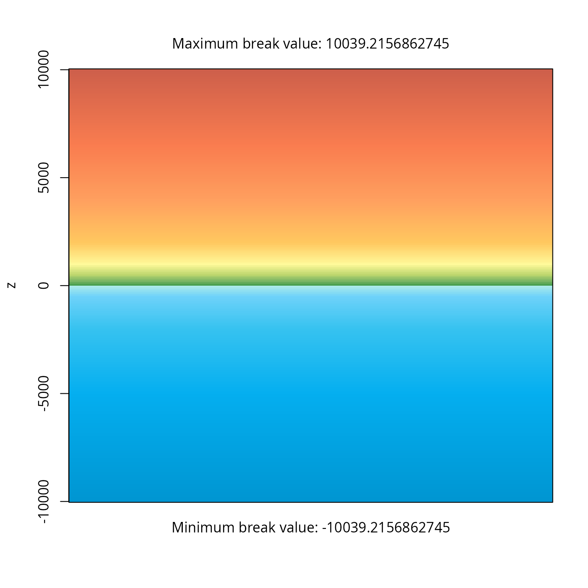
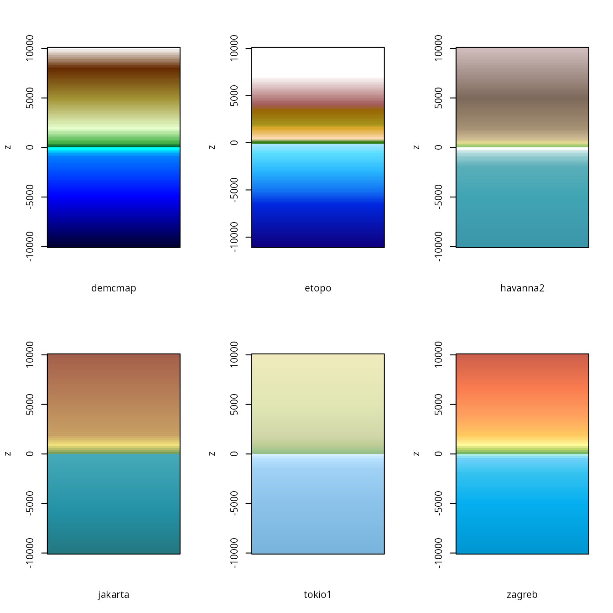
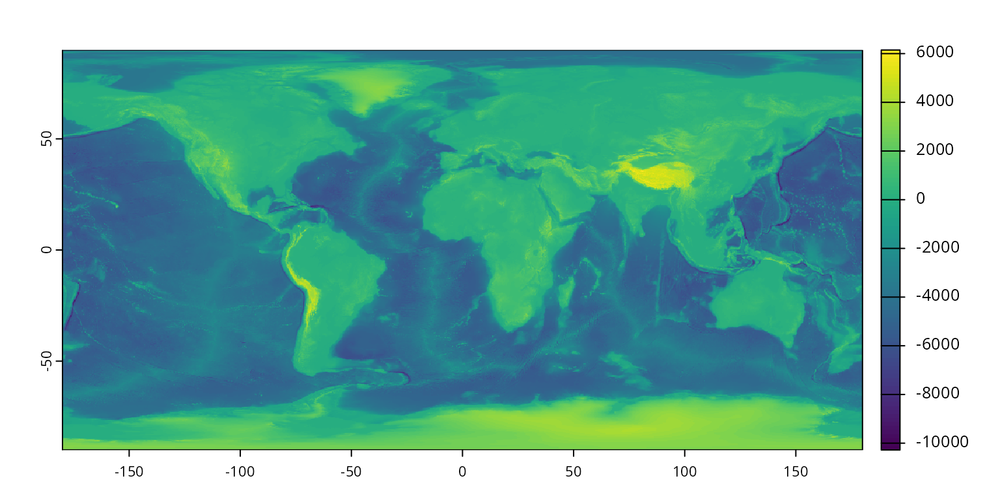
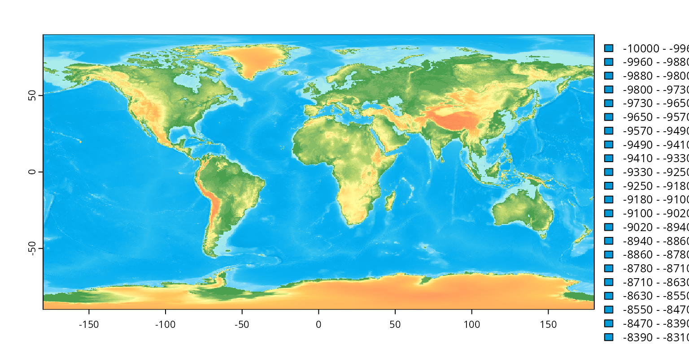
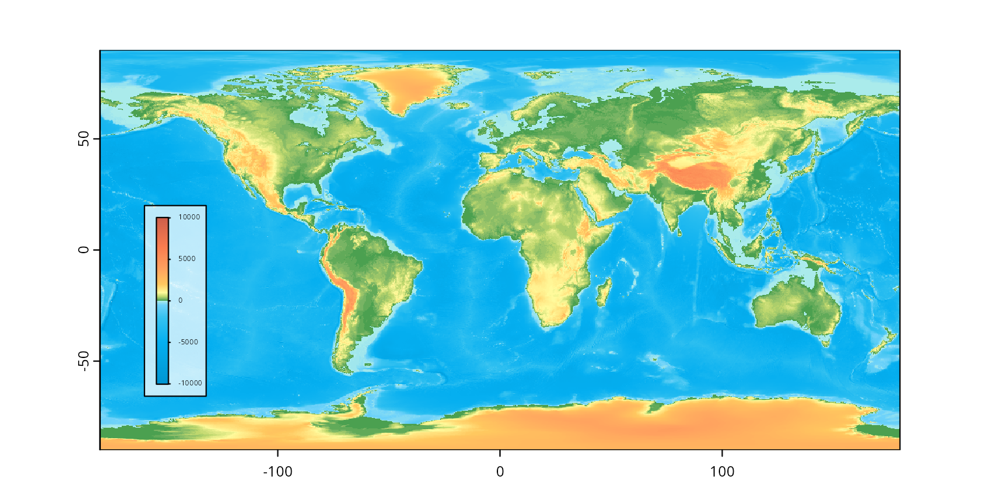

1. Topography matrices
The built-in volcano topographic data.
data(volcano)Attach the package.
Create a color ramp
Specify tiepoints for the color ramp calibration.
tiepoints <- data.frame(
z = c(0, 100, 120, 160,220),
color = c("#46AF64", "#96C869", "#E1D791", "#CDB991", "#7D695A")
)Construct an actual color ramp from the tiepoints:
# expand
ramp <- expand(tiepoints, n=256)
str(ramp)
#> List of 3
#> $ col : chr [1:256] "#46AF64" "#46AF64" "#47AF64" "#48AF64" ...
#> $ breaks: num [1:257] -0.431 0.431 1.294 2.157 3.02 ...
#> $ mid : num [1:256] 0 0.863 1.725 2.588 3.451 ...
#> - attr(*, "class")= chr "calibramp"Visualize the color ramp.
plot(ramp)Plotting with image
Use the color ramp to plot the data.
image(volcano, breaks=ramp$breaks, col=ramp$col, axes=FALSE)Use the ramplegend function to draw a legend:
image(volcano, breaks=ramp$breaks, col=ramp$col, axes=FALSE)
ramplegend("topright", ramp=ramp, cex=0.7, box=list(border=NA, col="#ffffff55"))Different shading
tiepoints2 <- data.frame(
z = c(0, 100, 110, 130,200),
color = c("#46AF64", "#96C869", "#E1D791", "#CDB991", "#7D695A")
)
ramp2 <- expand(tiepoints2, n=512) The same topography, same palette, with different tiepoints:
image(volcano, breaks=ramp2$breaks, col=ramp2$col, axes=FALSE)
ramplegend("topright", ramp=ramp2, cex=0.7, box=list(border=NA, col="#ffffff55"))Changes
A hypothetical succession assuming a 5 meter increase:
par(mfrow=c(3,2), mar=c(1,1,1,1))
image(volcano-10, breaks=ramp$breaks, col=ramp$col, axes=FALSE, main="-10 m")
image(volcano-5, breaks=ramp$breaks, col=ramp$col, axes=FALSE, main="-5 m")
image(volcano, breaks=ramp$breaks, col=ramp$col, axes=FALSE, main="+0 m")
image(volcano+5, breaks=ramp$breaks, col=ramp$col, axes=FALSE, main="+5 m")
image(volcano+10, breaks=ramp$breaks, col=ramp$col, axes=FALSE, main="+10 m")
image(volcano+15, breaks=ramp$breaks, col=ramp$col, axes=FALSE, main="+15 m")
ramplegend("bottomright", ramp=ramp, cex=0.7, box=list(border=NA, col="#ffffff55"))With imagePlot
A similar effect can be reached using the imagePlot
function from fields extension package, which will display
the legend for color ramp automatically.
library(fields)
#> Loading required package: spam
#> Spam version 2.10-0 (2023-10-23) is loaded.
#> Type 'help( Spam)' or 'demo( spam)' for a short introduction
#> and overview of this package.
#> Help for individual functions is also obtained by adding the
#> suffix '.spam' to the function name, e.g. 'help( chol.spam)'.
#>
#> Attaching package: 'spam'
#> The following objects are masked from 'package:base':
#>
#> backsolve, forwardsolve
#> Loading required package: viridisLite
#>
#> Try help(fields) to get started.
# the function call
imagePlot(volcano, breaks=ramp$breaks, col=ramp$col, axes=FALSE)2. Georeferenced raster topography
Built-in objects for topographies
The rampage package includes a built-in set of topogoraphic color
schemes (topos). These can be accessed with the
data function.
data(topos)This object is a list of data.frames that
are potential inputs to the expand function. For instance,
if you want to generate 256 colors from the 'zagreb' theme,
you can do that with
topoRamp <- expand(topos$zagreb, n=256)This ramp can be visualized with the rampplot
function:
rampplot(topoRamp)
This shows the exact values that are rendered to the specific interals of height.
Here are the currently accessible ramps:
par(mfrow=c(2,3))
for(i in 1:length(topos)){
# the current color map
current<- expand(topos[[i]], n=100)
rampplot(current, xlab=names(topos[i]), breaklabs=FALSE)
}
Topographies with terra
The terra extension is an ideal tool to visualize
georeference topographic data, such as the ETOPO
global topographic relief model. To provide an example, a downscaled
0.1x0.1 degree-resolution version of this ETOPO1 version of this model
is deposited on the package’s
website, which you can read in with the following line of code:
library(terra)
#> terra 1.8.54
#>
#> Attaching package: 'terra'
#> The following object is masked from 'package:fields':
#>
#> describe
etopo <- rast("http://adamtkocsis.com/rampage/etopo1_Ice_c_gdal_0.1.nc")
etopo
#> class : SpatRaster
#> size : 1800, 3600, 1 (nrow, ncol, nlyr)
#> resolution : 0.1, 0.1 (x, y)
#> extent : -180, 180, -90, 90 (xmin, xmax, ymin, ymax)
#> coord. ref. : lon/lat WGS 84
#> source : etopo1_Ice_c_gdal_0.1.nc
#> name : etopo1_Ice_c_gdal_0.1This can be visualized with the default viridis palette using the plot function:
plot(etopo)
We can get this to work with the our topographic ramp, by referring
to the col abd breaks arguments of the plot,
as we did before.
plot(etopo, col=topoRamp$col, breaks=topoRamp$breaks)
Note that by default this will use a categorical legend, which is not
ideal. Setting type="continuous" will reposition the color
values, making it difficult to assert the correctness of the
legend-to-values relationship. If a legend is desired, it can be plotted
iwth the ramplegend function:
plot(etopo, col=topoRamp$col, breaks=topoRamp$breaks, legend=FALSE)
ramplegend(col=topoRamp$col,breaks=topoRamp$breaks, cex=0.3, x=-160, y=20)
Which leaves a much better visual impression.